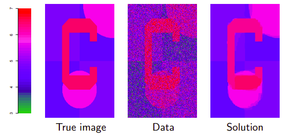
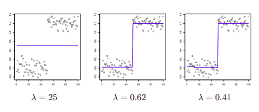

Yapay öğrenme (machine learning) ve optimizasyonda sürekli optimizasyonu görürüz. Diğer disiplenlerde de görülür tabii ama bu ikisi benim ana konularım o yüzden o konulardan bu derste daha fazla bahsedeceğiz. Derste belirli bir amaç için gereken optimizasyon problemini çözmekten çok optimizasyon mekanizmasının detaylarını inceleyeceğiz. Optimallik şartlarına bakmak, varılan çözümün niteliğine bakmak bu detaylardan bazıları.
Şimdi aklınıza gelen bazı optimizasyon örneklerini verin bana [öğrenciler söylüyor]
1) Regresyon - En Az Kareler. Evet. Hata karelerinin toplamı minimize edilir burada, bir hedef $y$ vardır, onu bir formül üzerinden katsayıları olan bir denklem vardır, ve model uyum iyiliğini hata kare toplamı üzerinden ölçeriz.
$$ \min_\beta \sum (y_i - x_i^T \beta)^2 $$
Başka ne tür regresyon şekilleri var?
2) Regülarize Edilmiş Regresyon - Lasso. Burada yine hata karelerin toplamı var, ama üstüne katsayıların L1 norm'unu minimize etmeye çalışırız. Yani
$$ \min_\beta \sum (y_i - x_i^T \beta)^2 \quad \textrm{oyle ki} $$ $$ \sum |\beta| \le t $$
3) En Az Mutlak Sapma Regresyonu (Least Absolute Deviations) - bu da benden. Bu tür regresyon ile kare yerine mutlak değer operasyonu kullanılıyor [1, 14:35].
$$ \min_\beta \sum |y_i - x_i^T \beta | $$
BU tür regresyon ile aykırı (outlier) değerlere daha az önem verilmiş olur. Fakat mutlak değer hesabı kullanınca optimizasyon zorlaşıyor çünkü üstteki formül artık pürüzsüz değil.
4) Sınıflama - Lojistik Regresyon. LR ile $y_i$ ikisel olur, 0 ya da 1. LR formülizasyonu normal regresyona benziyor,
5) Bilgisayar Bilim - Seyahet Eden Satış Görevlisi Problemi (TSP), Planlama, Ayrıksal Optimizasyon. Bu ders bloklarının sonunda Tam Sayı Programlama (İnteğer Programming) konusuna bakacağız, bu tür konulara orada daha çok yaklaşmış olacağız.
6) İstastistik - Maksimum Olurluk. MO istatistikte pek çok yaptığımız işin mihenk taşıdır. Hatta LR, En Az Kareler, vs aslinda MO'nun özel, spesifik halleridir. Burada vurgu içbükey olurluk elde etmek, ki bir içbükey fonksiyonu maksimize etmiş olalım, bu bir dışbükey fonksiyonu minimize etmek ile aynı şey.
Böyle devam edebilirdik, optimizasyon örnekleri sayfalar doldurabilirdik. Optimizasyon her yerde. Ama belki de neyin optimizasyon olmadığına da bakmak iyi olur. Mesela istatistikte optimizasyon olmayan problemler nedir?
Hipotez test etmek, p-değerleri. Ya da takviyelemek (boosting), önemli bir konu ama optimizasyon değil. Rasgele Ormanlar (Random Forests), değil. Önyükleyiciler (bootstrap), çapraz-sağlama (cross-validation), yine değil [1, 22:09].
Ve iddiam şu ki optimizasyon olmayan konular hakkında olanlara kıyasla daha fazla teorik bilgimiz var. Üstteki teknikler çoğunlukla prosedürsel. Ama mesela Lasso diyelim, bu bir dışbükey optimizasyonun çıktısı olduğu için optimalite şartları üzerinden onun çözümünün özellikleri hakkında konuşmak kolaylaşıyor.
Peki biz niye bu dersteki konuyu ogrenmek isteriz, isteyebiliriz? Sonucta Lasso'yu birisi bulmus onun kodunu cagiririz, is biter. Uc sebep var. Birincisi farkli algoritmalar duruma gore daha iyi performans gosterebilir, durum derken veriden bahsediyorum. Bu sebeple her algoritmanin ozunu anlamak cok onemli. Ikincisi herhangi bir alandaki problemi cozen optimizasyonun temelini bilmek bize alan hakkinda ek gorus kazandirabilir.
Üçüncü sebep optimizasyon hızlı hareket eden bir alan, eğlenceli! Mesela optimizasyon alanındaki NIPS Çalıştayına (Workshop) bakarsanız, her sene değişiyor! Birkaç sene önce dışbükey olmayan optimizasyon büyük konuydu, tabii o zaman bu dersi işlerken utanır gibi oluyorduk çünkü bizim konu dışbükey optimizasyon ve yapay öğrenimdeki en büyük konferansta dışbükey olmayan konular işleniyor.. Fakat o zamanki odağın sebebi o zamanlarda bir sürü yeni dışbükey olmayan ve yakınsadığı ispat edilen metotların bulunmuş olmasıydı. Ama bir sonraki sene rasgele (stochastic) optimizasyon geri dönüş yapmıştı, rasgele gradyan inişi vs. Böyle her sene değişim oluyor, bu güzel bir şey demek ki hala ilerleme için oldukça alan var.
Ornekler
Bu orneklerin cogu tam varyasyon gurultu yoketmek (denoising) etrafinda, bunun bir diger ismi kaynasmis (fused) lasso. Elimizde iki boyutlu izgara halinde bir veri var, bir goruntu, $i,j$ kordinatlarinda bir renk degeri var, 3 ile 7 arasindaki renkler.

En soldaki gerçek resim. Ortadaki ise onun gürültülü hali, bizim elimizdeki veri bu diyelim. Görüntüyü $y$ vektörü olarak temil edeceğiz, bu tek boyutlu ama düşünün ki görüntüdeki iki boyutu alıp düzleştirdik, tek vektör yaptık, alt alta satır satırları yanyana koyduk mesela, vs. Bu resim hakkında şunu biliyoruz, görüntü parçasal olarak sabit, yani yanyana hücreler birbirinden çok farklı değil. Bazı yerlerde olabilir mesela mavi arka plandan kırmızı objeye geçiş yapılan yerlerde, ama diğer yerlerde benzerlik var. Biz gürültülü resimden gürültüsüz resmi çıkartmak istiyoruz.
Gürültü yoketme alanında pek çok yöntem var. Fakat gürültü yoketme problemine optimizasyon açısından yaklaşabiliriz. Mesela, hedef kriteri şu haldeki bir optimizasyon problemi,
$$ \min_{\beta \in \mathbb{R}^n} \frac{1}{2} \sum _{i=1}^{n} (y_i - \beta_i)^2 + \lambda \sum _{(i,j) \in E)} |\beta_i - \beta_j| $$
İlk terimde aradığımız ideal resim ile gerçek resim arasındaki karesel kayıp hesabı var, yani her hücredeki $\theta_i$'in olabildiği kadar $y_i$ verisine yakın olmasını istiyoruz. İkinci terimdeki $\lambda$ bizim dışarıdan atadığımız bir parametre, iki terim arasındaki dengeyi kuruyor. Bu parametrenin çarptığı ikinci terim bir ceza terimi. Yanyana olan her $i,j$'ye bakıyor, sağda solda altta üstte olsun, bu hücrelerin renk farkını cezalandırıyor, yani farkın daha az olmasını zorluyor çünkü resimde genel olarak bir süreklilik olmasını istiyoruz. Oldukça sofistike bir işlem aslında, ama optimizasyon formülasyonu açısından oldukca basit. İki terim var, o kadar.
Çözüm resimde en sağdaki resimde görülüyor. $\lambda=25$ seçtim onun için, ve çözdüm. $\lambda$'yi arttırdıkça resmin daha kaba görüntülü olmaya başladığını görebilirdiniz, mesela kırmızı ile pembe bölgeler birbiri içine geçmeye başlayabilirdi. $\lambda=\infty$ için ne olur? Her şey tek bir renk olur, o renk $y$'nin ortalaması olurdu. $\lambda=0$ için gürültülü verinin aynısını elde ederiz.
Çözümü nasıl elde ettim? Üstteki sonucu ADMM ile elde ettim. Bu ders bloğunun sonunda bu algoritmayi göreceğiz. Bu problemde ADMM'in spesifik bir versiyonunu kullandım, bu versiyonun bu problemde iyi işleyeceğini biliyordum. 300x200 boyutunda bir resimdi, 20 döngü sonrası sonucu elde ettim, her döngüde lineer zaman harcadı. Tüm işleyişi bir saniyenin ufak bir parçasıydı.
Proksimal gradyan inişi ile 1000 kere döndük, sonuç fena değil ama bazı renkler tam birleşmedi. Eğer 10000 kere döndürseydim ADMM sonucuna yaklaşırdı. Bu metot ile de her döngüde lineer zaman harcanıyor, ama algoritmanın tamamı daha yavaş yakınsadı. Yani, amaç için doğru araç diyemeyiz.
Sonra kordina iniş adında çok popüler bir diğer metot işlettim, 10000 kere döndü, adımlar lineer zaman, ama yakınsama olmadı. Hatta sonuç oldukca kötüydü. Kesinlikle amaç için yanlış araç. Yani iyi ile kötü metot arasında boyutsal fark var (order of magnitude), işlem hızı bakımından 1, 2, daha kötü değil, 10, 100 kat daha kötüden bahsediyoruz, ve kalite iyi değil.
Bu arada kordinat inişini öğrenince üstteki kriteri nasıl kullandığım kafa karıştırabilir, cevap algoritmayi kriterin ikizi üzeride işlettim. Dersimizde ilerledikçe bunun anlamını öğreneceğiz. Bir problemin ikizini almak ve bu ikize algoritmaları nasıl uygulanacağını görmek.. bunları hep göreceğiz.
Mesajım ne? ADMM her yerde çok iyi işler demek mi? Hayır. ADMM bazı yerlerde daha kötü işler. Diğer yerlerde proksimal gradyan daha iyidir. Bu sebeple tüm seçenek yelpazesinin bilmek, her algoritmanin özelliklerini anlamak faydalıdır.
Bir diger ornek [1, 42:53]. Tam varyasyon gurultu yoketme yapiliyor yine ama burada iki boyuta bakmak yerine tek boyuta bakiyoruz, yani bazi acilardan bu problem daha kolay. Veri yine $y_1,..,y_n$ ama duzlestirilmis goruntu yerine tek bir eksende veri. Ayrica verinin ortalamasi parcasal sabit, yani tek duz cizgi.
$$ \min_\theta \frac{1}{2} (y_i-\theta_i)^2 + \lambda \sum _{i=1}^{n-1} |\theta_i - \theta_{i+1}| $$
Burada ceza teriminde yanyana olan iki $\theta$'nin farkini cezalandiriyoruz, yani yanyana verinin benzer olmasini istiyoruz.

Veriye bakarsak iki bolge var, bir bolgede ortalama sabit digerinde de (baska) bir sabit. Ama algoritma bunu bilmiyor tabii onu kesfetmesi gerekecek. Eger $\lambda$ buyukse global ortalama ortaya cikiyor, tek cizgi. Goruntu orneginde soyledigimiz oluyor yani ama tek boyutta. $\lambda$ kuculdukce farkli ortalama bloklarinin ortaya cikmasini sagliyoruz. Ortadaki sonuc oldukca iyi. 3. resimde $\lambda$ biraz daha kucultuldu, burada bakiyoruz algoritma basta ufak bir blok daha yaratmayi secti. Bloklarin arasindaki noktaya "degisim noktasi (changepoints)" denir.
Bir değişim noktası elde edince, şimdi kendimize bir istatistiki soru sorabiliriz. Bu değişim noktalarının istatistiki önemi (significance) nedir? Görsel olarak ben bakınca diyorum ki 3. resimde sağdaki değişim noktası önemli ama o baştaki ufak değişim değil. O yapma (spurious) bir değişim herhalde. Tabii $\lambda$'yi daha da ufaltsam daha da fazla uyduruk değişim noktaları elde ederdim. Optimizasyon probleminin özü böyle, ayar değişkeni $\lambda$ elde edilen sonuçlara, neye ne kadar ağırlık verildiğini kontrol ediyor. Fakat istatistiki öneme dönersek bu tür soruları sadece tam varyasyonu iyi anladığımız takdirde cevaplandırabiliriz.
[devam edecek]
Kaynaklar
[1] Tibshirani, Convex Optimization, Lecture Video 7, https://www.youtube.com/channel/UCIvaLZcfz3ikJ1cD-zMpIXg